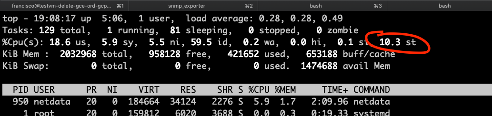
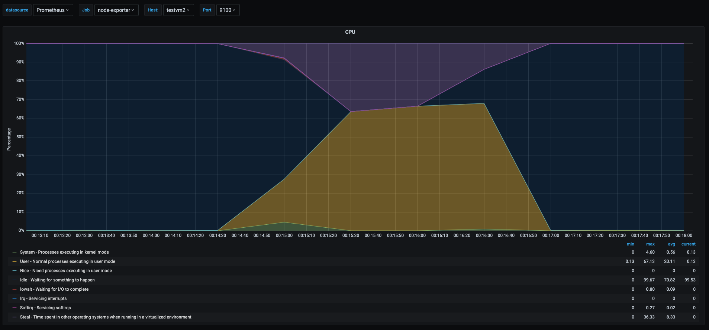
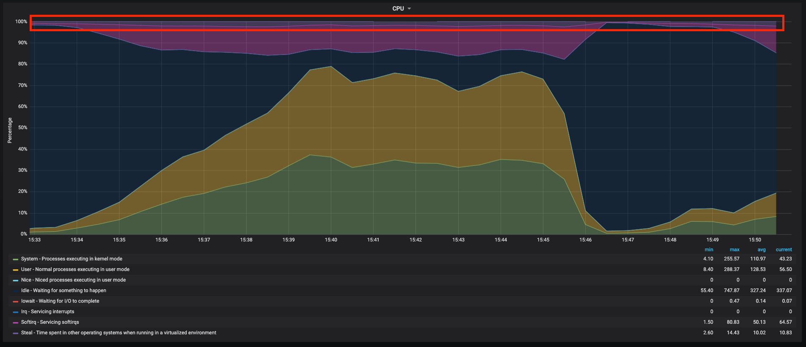

Jul 16, 2020
6 mins read
In a previous post I talked about Taming the cpu metrics, while that post was an overview of cpu metrics I thought it was a good topic to emphasize on the cpu steal metric in linux hosts. This is something I recently found and didn’t know it even existed, but it can be very useful when running in virtualized environments and helping us tune either the vm, or the physical host that runs the vms. It is something engineers probably overlook and probably don’t even know, if I have known this a couple of months ago would have saved me some troubleshooting time.
The steal value for cpu metrics in linux show the percentage of time the virtual cpus (vcpus) are waiting for physical cpu time, this would be because the physical cpu is being used by other vms or processes in the physical host and the physical cpus are being shared by vms/processes. And it is the st value in the cpu section of the top command.

So now let’s talk more in detail about this metric. I my previous post Taming the cpu metrics I reproduced some scenarios, and one of them reproduced spiking the steal values. So let’s look a a cpu metrics graph.

To give more context, this graph comes from the test where in my home linux server lab, I ran 3 vms and ran a cpu load test in all 3 vms, making them try to use 100% of their own vcpu. However the physical host had only 2 physical cpus and as we can see in the metrics the purple area is the percentage of the time the vm was waiting for physical cpu time. So all 3 vms were getting throttled by the fact that other vms were trying to use the same resource.
Lot of todays technology is backed by either on premise virtual machines running on VMWare, KVM, or XEN; or running in virtual machines in public cloud, or some hybrid scenario. So knowing what is the performance impact for an application or server running on a virtualized environment is something good to know. The steal value of the cpu is one metrics to watch for when looking for optimizing virtualized workloads.
When running a vm when we see this value go higher, the reason would be that there could be a noisy neighbor running in the physical host which is affecting the vm we are looking at. This is helpful to catch a vm hogging on resources and affecting other vms.
When I see this value spiking in most vms running on the same physical host, it might indicate that the host is oversubscribed and we need to split the workload in more servers if we can’t tolerate the performance hit.
An interesting fact is that running on public clouds vms this value would show different in similar vms running similar workloads and this might be due to the fact that the vms run in a shared environment and even if the vcpus are dedicated some other vms might affect my vm a bit. So there will always be a performance loss when running a vm and we need to be aware of that when we designing applications to run in a virtual environment.

This graph shows a real vm running in a well known public cloud, the snapshot shows the cpu usage when I was performing a load test, while we see a lot going on in this graph as userspace, kernelspace and softirq taking most of the cpu time, there is around 4% that is spend in steal (waiting for real cpu) the dark purple area, so this shows a bit of the performance hit when running in the cloud and this type of vm, having this is inevitable when running vms, so I always have in mind this performance hit when running in a virtualized environment. More or less I have run workloads in google cloud, AWS, Azure and IBM cloud, and I have seen the same behavior in all of them, some more some less but it’s always going to be there.
Another situation where this is going to be helpful to catch when the vm cpu is getting throttled, this happens in public clouds when running “burstable” vm types, this is how I actually learnt about the steal metric, I was running heavy workloads and by mistake one of the vms was created with similar specs but with a burstable type, and I saw performance issues in one of them, when I was digging the metrics I found a spike in the steal value, which I didn’t know what it was so I started digging a bit more, and then realized the vm was set up as burtable type that was exceeding the permitted usage. So beware when running burstable instances in the public clouds as it will save some money because they are cheaper, but will give us some headache on performance and sometimes is not that easy to replace the vm type. Just some example of vms that are burstable would be T-series instances in AWS, B-Series instances in Azure, and Google cloud would be the instance types marked as shared vcpu.
Steal cpu metric will help us catch noisy neighbors, oversubscribed physical hosts running vms, or to catch if the vm is getting throttled in the cloud. But having longer term metrics will be also help when calculating the impact of running in a virtualized environment.
Unfortunately this is not the only metrics that we can use to calculate the impact of running in a virtualized environment, but is is useful. There are other things to have in mind when using virtual machines, one very important thing is to have metrics stored for future reference and making informed decisions when designing or sizing a project.
This is pretty much a followup of previous posts where I talk about performance, however this are just memoirs from my personal experience and they are far from having a magic formula that will tell how to tune or optimize performance.
Performance tuning servers/applications is an art of it’s own, where variables and constraints need to be balanced for finding the sweetspot of resources versus money spent to run an applications and fulfill the requirements of latency and availability.
Sharing is caring!